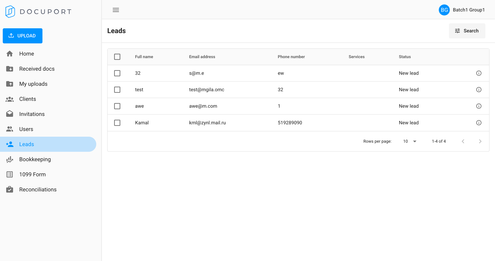

-
As a data consumer, I want to make sure the LEADS information from UI are stored in postgres DB correctly in LEADS table.
1:45:25 AM / 00:00:09:712 Fail
As a data consumer, I want to make sure the LEADS information from UI are stored in postgres DB correctly in LEADS table.
03.21.2025 1:45:25 AM 03.21.2025 1:45:35 AM 00:00:09:712 · #test-id=1Failverify UI leads matches in DBGiven user is on Docuport login pageWhen user enters username for advisorAnd user enters password for advisorAnd user click login buttonAnd the user navigates to "Leads" pageWhen the user gets all the leads information based on "Full name" and "Email address" and "Phone number"Then verify leads information match in DBStep skippedio.docuport_g1.step_definitions.Hook.tearDown(io.cucumber.java.Scenario)verify UI leads matches in DB
-
org.openqa.selenium.StaleElementReferenceException
1 tests
org.openqa.selenium.StaleElementReferenceException
1 failedStatus Timestamp TestName Fail 01:45:34 AM When the user gets all the leads information based on "Full name" and "Email address" and "Phone number" As a data consumer, I want to make sure the LEADS information from UI are stored in postgres DB correctly in LEADS table..verify UI leads matches in DB.When the user gets all the leads information based on "Full name" and "Email address" and "Phone number"
-
@db
1 tests
@db
1 failedStatus Timestamp TestName Fail 01:45:25 AM verify UI leads matches in DB As a data consumer, I want to make sure the LEADS information from UI are stored in postgres DB correctly in LEADS table..verify UI leads matches in DB -
@leads
1 tests
@leads
1 failedStatus Timestamp TestName Fail 01:45:25 AM verify UI leads matches in DB As a data consumer, I want to make sure the LEADS information from UI are stored in postgres DB correctly in LEADS table..verify UI leads matches in DB -
@ui
1 tests
@ui
1 failedStatus Timestamp TestName Fail 01:45:25 AM verify UI leads matches in DB As a data consumer, I want to make sure the LEADS information from UI are stored in postgres DB correctly in LEADS table..verify UI leads matches in DB
Started
Mar 21, 2025 01:45:24 AM
Ended
Mar 21, 2025 01:45:35 AM
Features Passed
0
Features Failed
1
Features
Scenarios
Steps
Timeline
Tags
| Name | Passed | Failed | Skipped | Others | Passed % |
|---|---|---|---|---|---|
| @db | 0 | 1 | 0 | 0 | 0% |
| @leads | 0 | 1 | 0 | 0 | 0% |
| @ui | 0 | 1 | 0 | 0 | 0% |